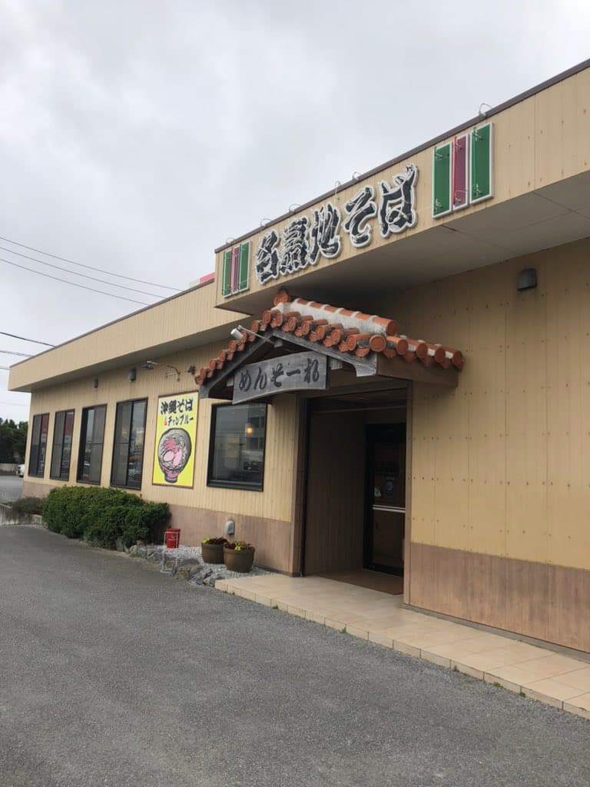
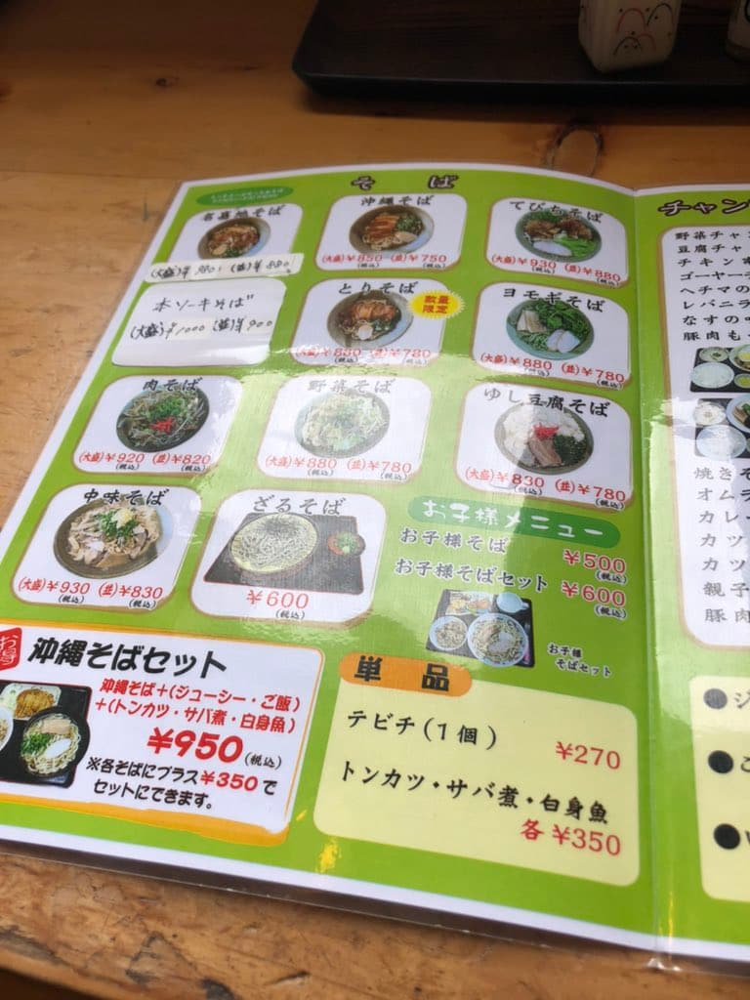
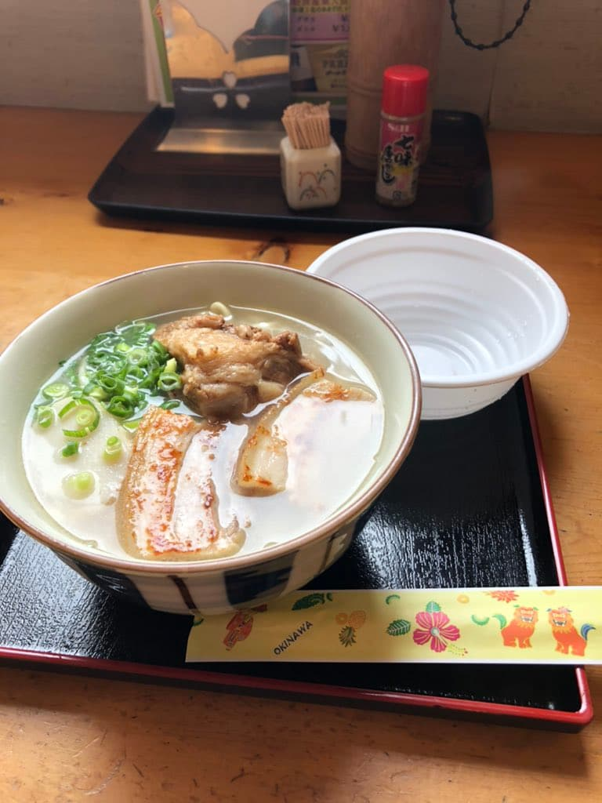

I went to eat here in April 2023 😁

I ordered the "Nakachi Soba," which has the same name as the shop 😊


The cloudy soup has a strong pork bone base 😊 The noodles are medium-thin and wavy.
Unlike at other shops, the braised pork belly (sanmai-niku) wasn't soy sauce-based but suchika (salt-cured pork belly), which was a first for me. In Okinawa, suchika sometimes appears as an offering at the Buddhist altar lol It had been a while since I'd eaten it 😁 The soft-bone pork ribs (nankotsu soki) also weren't given the usual soy sauce-based seasoning, but a seasoning that seemed to match the suchika.
It may also be unusual that there's no kōrēgūsu (chili-infused awamori) seasoning on the tables.
Rating (9/15): Solidly tasty 😊 It's close to Naha Airport, so how about it while sightseeing? I'd also like to try their unusual Okinawa soba varieties like nakami soba, chicken soba, and mugwort soba 😊
Noodles: ★★★☆☆（3）
Soup: ★★★☆☆（3）
Toppings: ★★★☆☆（3）